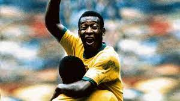
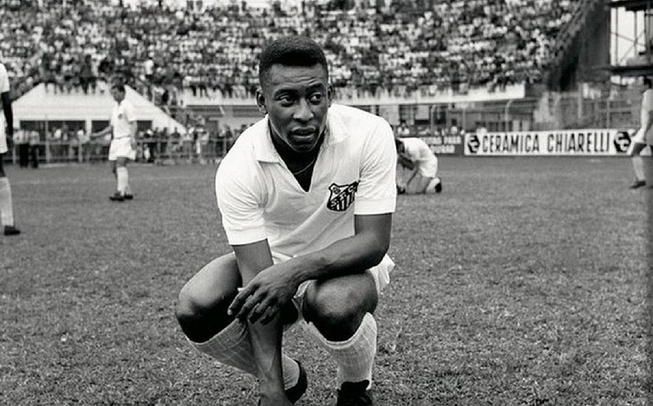
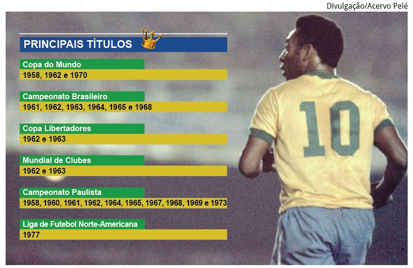
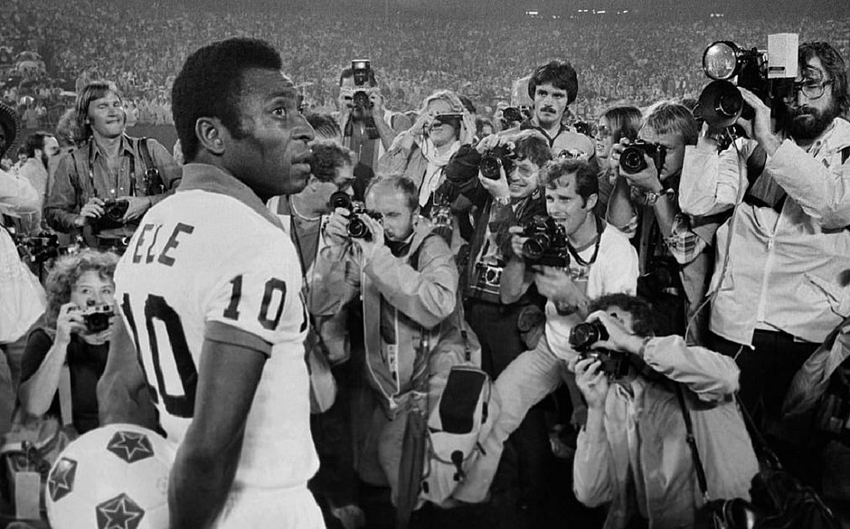
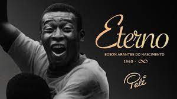

<!DOCTYPE html>
<html lang="en">
<head>
    <meta charset="UTF-8">
    <meta http-equiv="X-UA-Compatible" content="IE=edge">
    <meta name="viewport" content="width=device-width, initial-scale=1.0">
    <title>Matheus Henrique de Melo & Pedro Otavio Ribeiro</title>
    <link rel="stylesheet" href="style.css">

</head>
<body>
</body>
</html>
<h1><i><b>Pelé: O rei do futebol</b></i></h1>

<h2>"Edson Arantes do Nascimento, o Pelé, é um ex-esportista brasileiro, considerado o maior jogador da história do futebol, personalidade mundial do esporte e popularmente chamado de Rei do Futebol. Nasceu na cidade de Três Corações, em Minas Gerais, no dia 23 de outubro de 1940. É filho de João Ramos do Nascimento (também ex-jogador de futebol, conhecido como Dondinho) e Celeste Arantes do Nascimento. Morreu aos 82 anos, em 29 de dezembro de 2022, em São Paulo."
</h2>
<h1><i><b>Biografia do Rei</b></i></h1>

<h2>"Aos quatro anos de idade, Edson e sua família mudaram-se para Bauru, em São Paulo. Nessa época, ele era chamado de Dico pela família e de Edson pelos amigos. Influenciado pelo pai, Dico sempre foi fã de futebol e logo começou a fazer parte dos times de garotos que jogavam nas ruas de Bauru. Ele gostava de atuar no gol, inspirado no goleiro José Lino da Conceição Faustino, o Bilé, amigo de time de seu pai, o Vasco de São Lourenço (Minas Gerais).
    Como Edson não conseguia pronunciar o nome Bilé corretamente, durante os jogos com os amigos, ele falava algo semelhante com “Seguuura, Pilééé!”, quando fazia suas defesas. O fato fez com que os amigos passassem a chamá-lo de Pelé. Ele não gostou disso, e foi aí que o apelido pegou entre os amigos.
    Além dos jogos de futebol, durante a infância, o garoto ajudava a família como podia. O pai lesionou-se e não continuou a jogar futebol, o que deixou a família em dificuldades. Para contribuir com a renda familiar, Pelé trabalhou como engraxate em Bauru."</h2>
<h1><b><i>Carreira de Pelé</i></b></h1>
<h2>"Destaque dos jogos nas ruas de Bauru, Pelé passou por algumas equipes amadoras durante sua infância, e, aos 11 anos, o jogador Waldemar de Brito descobriu-o e convidou-o para a equipe que estava formando: o Clube Atlético de Bauru. Passados poucos anos, Waldemar percebeu o enorme talento de Pelé e decidiu levá-lo para um time maior, o Santos Futebol Clube."
    "Em 1956, ao chegar no Santos como promessa de Waldemar de Brito, que, de acordo com informações do site oficial do Santos, afirmou ao clube: “Esse menino vai ser o melhor jogador de futebol do mundo!”. Passado um mês de sua chegada ao clube, o jovem fez sua primeira partida na equipe profissional. O jogo foi contra o Corinthians de Santo André, e o Santos venceu por 7 a 1. Pelé entrou no segundo tempo de partida e marcou o sexto gol.
Pelé começou a ser reconhecido nacionalmente ainda com 16 anos de idade. Em 1957, o garoto já era titular do Santos e foi artilheiro do Campeonato Paulista, o mais jovem até hoje, marcando 36 gols. O Rei do Futebol atuou durante quase toda sua carreira no Santos, entre 1956 a 1974. No período, ele levou o clube a conquistar dez títulos estaduais e seis campeonatos nacionais (Taça Brasil e Torneio Robertão), além de duas Copas Libertadores e dois Mundiais de Clubes, em 1962 e 1963."
"Passados dez meses da contratação de Pelé pelo Santos, o garoto foi convocado pela Seleção Brasileira pela primeira vez para disputar a Copa Roca (atual Superclássico das Américas). A competição era um torneio amistoso entre a Seleção Brasileira e a Seleção Argentina.
As duas partidas foram realizadas no Brasil. A primeira marcou a estreia de Pelé com a camisa do Brasil e foi realizada no Maracanã. A Argentina venceu por 2 a 1, e o gol brasileiro foi marcado por Pelé. Na partida de volta, no Estádio do Pacaembu, o Brasil venceu por 2 a 0, com um gol de Pelé e outro de Mazzola. Foi o primeiro título de Pelé pela Seleção Brasileira."
"Pelé é, até hoje, o jogador mais novo a vencer uma Copa do Mundo de Futebol. Com apenas 17 anos e 8 meses, Pelé foi campeão do mundo em 1958, na Suécia. O então garoto fez seis gols em sua primeira Copa do Mundo e foi o artilheiro do Brasil. Nessa edição, Pelé foi chamado pelos franceses de Rei do Futebol.
O primeiro gol de Pelé em uma Copa do Mundo foi contra o País de Gales, nas quartas de final do Mundial de 1958. O feito concede a Pelé o recorde de jogador mais novo a fazer um gol em uma Copa do Mundo.
Na Copa da Suécia, os dirigentes brasileiros esqueceram de enviar a numeração dos jogadores para a FIFA, e a entidade precisou defini-la. Pelé era reserva e recebeu a camisa 10, número que ficou eternizado em suas costas. Por causa de Pelé, os jogadores mais habilidosos passaram a usar a camisa 10."
</h2>

<h1><b><i>Aposentadoria de Pelé</i></b></h1>
<h2>"Pelé despediu-se dos gramados em 1977 em um jogo do Cosmos contra o Santos, nos Estados Unidos. A partida contou com a presença de artistas, políticos e personalidades mundiais. O Rei disputou o primeiro tempo da partida com a camisa do Cosmos e o segundo tempo com a camisa do Santos. De acordo com o Guinness Book (Livro dos Recordes), Pelé marcou em sua carreira 1281 gols, sendo o maior artilheiro da história do futebol."</h2>

<h1><b><i>Morte do Rei Pelé</i></b></h1>
<h2>"O Rei Pelé faleceu no dia 29 de dezembro de 2022, aos 82 anos, por falência múltipla de órgãos. O ex-jogador estava internado há semanas no Hospital Israelita Albert Einstein para tratar da progressão de um câncer de cólon. Em 2021 o atleta já havia passado por uma cirurgia e sessões de quimioterapia para tratar da doença, no entanto foram detectadas metástases no intestino, pulmão e fígado, e a doença passou a não responder ao tratamento.
    Com a notícia da morte do maior jogador de futebol de todos os tempos, homenagens foram feitas em todo o mundo. Em novembro, durante a realização da Copa do Mundo de Futebol no Catar, Pelé já estava hospitalizado e recebeu diversas homenagens em jogos da Seleção Brasileira.
    Apesar da morte do Rei Pelé ter sido em 2022, a despedida só começou a ser realizada no ano seguinte. A pedidos da família, a cerimônia de velório ocorreu somente nos dias 2 e 3 de janeiro de 2023, no estádio da Vila Belmiro, que pertence ao Santos, clube em que Pelé começou sua história. O adiamento no velório do Rei se deu para não coincidir com a cerimônia de coroação do novo presidente da República, Luiz Inácio Lula da Silva, eleito em 2022, e que tomou posse para seu terceiro mandato em 1º de janeiro de 2023."</h2>
    
    <h3><b>👑∞</b></h3>
